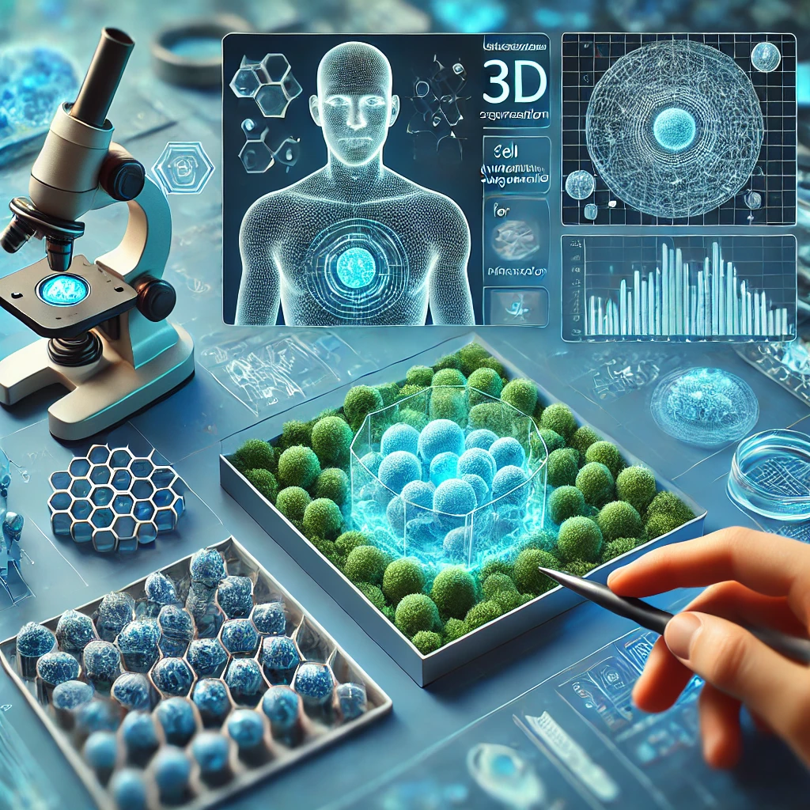

In the complex and high-stakes world of drug discovery, the journey from initial concept to a viable therapeutic solution is fraught with challenges. Traditional methods, often relying on isolated techniques and siloed processes, struggle to keep pace with the growing demand for speed, accuracy, and innovation. This is particularly critical in the realm of brain disorders, where the urgency to discover effective therapies is heightened by the growing prevalence of conditions like Alzheimer’s, Parkinson’s, and epilepsy. According to the Tufts Center for the Study of Drug Development, the average cost of bringing a new drug to market now exceeds $2.6 billion, and the process can take over a decade to complete. Yet, despite these enormous investments, the success rate remains alarmingly low. A report from the Biotechnology Innovation Organization (BIO) reveals that only 1 in 8 drug candidates that enter clinical trials will ultimately receive FDA approval. This fragmented approach slows down the pipeline and limits the potential for breakthroughs, leaving wet labs overburdened and under-supported.
The statistics are staggering
Only 1 in 5,000 compounds that enter preclinical testing make it to human trials, reflecting the
immense challenges researchers face from the earliest stages of drug discovery. This is particularly
concerning in the context of brain disorders, which affect millions globally. For example, Alzheimer’s
disease alone affects over 50 million people worldwide, with that number expected to triple by 2050,
according to the World Health Organization (WHO). In the United States, nearly 6 million people live
with Alzheimer’s, and the economic burden of brain disorders is projected to exceed $1 trillion
annually by 2030, as reported by the National Institutes of Health (NIH). Parkinson’s disease,
another major brain disorder, impacts over 10 million people globally, with around 60,000 new cases
diagnosed each year in the U.S. Epilepsy, affecting over 50 million people worldwide, is one of the
most common neurological diseases globally, with the economic impact in the U.S. alone estimated to
be around $15.5 billion annually. Traditional wet lab environments, though essential, are often
bogged down by the need to repeatedly validate findings across various stages of the discovery
process. This lack of integration between computational and experimental approaches leads to data
silos, where insights gained in one phase may not effectively inform the next, resulting in
inefficiencies and increased risks of errors. Moreover, the shift from 2D cell cultures to 3D
models—and eventually to complex 4D data—adds further complexity, demanding a level of precision
and coordination that many current systems struggle to provide. With high costs, lengthy timelines,
and increasing pressure to innovate, the obstacles facing biologists in drug discovery, especially
for brain disorders, are both significant and multifaceted.
Our platform acts as a comprehensive co-pilot in drug discovery, integrating advanced tools and
methodologies across 2D, 3D, and 4D domains to support and enhance your wet lab capabilities. This
integration allows for a seamless transition between different phases of drug development, ensuring
that every piece of data is accurately captured and analyzed.
In the 2D domain, our platform excels at processing high-resolution brain slices, allowing for detailed
neuron segmentation and brain mapping. Utilizing a state-of-the-art neuron segmentation tool that operates
effectively with minimal training data, we ensure precise identification and delineation of neuronal
structures in 2D images. This segmentation is crucial for understanding the organization and distribution
of neurons within brain slices, facilitating subsequent analysis and comparison. Moreover, our platform
supports the identification of specific neuronal subtypes through enhancer-based labeling techniques,
enabling researchers to target and study distinct populations of neurons within the brain.
When it comes to 3D analysis, our platform extends its capabilities to volumetric brain imaging,
offering advanced tools for segmenting and analyzing entire brain volumes. The same neuron segmentation
technology used in 2D is applied to 3D datasets, allowing for the precise identification of neuronal
structures within the entire brain volume. This 3D segmentation is vital for understanding the spatial
relationships and connectivity between neurons, providing insights into brain function and pathology.
Additionally, our platform facilitates brain-wide gene expression quantification, enabling researchers
to correlate gene expression patterns with specific neuronal circuits and behaviors, thereby enhancing
the understanding of the molecular mechanisms underlying brain function.
Our platform also supports accurate brain registration, aligning 2D slices to standardized brain atlases.
This process ensures that different brain slices can be compared and integrated into a coherent dataset,
enabling researchers to study variations in neuronal architecture and correlate them with specific brain
regions. Through robust 3D brain registration, our platform aligns volumetric data to standardized 3D
brain atlases, essential for comparing brain volumes across different conditions or time points. This
capability is particularly crucial when analyzing data from multi-center studies, where variations in
imaging protocols and equipment can introduce inconsistencies. Our registration techniques are designed
to be resilient to these variations, ensuring that the anatomical integrity of the brain is preserved,
and enabling researchers to detect subtle changes in brain structure and function that may result from
drug interventions or disease progression.
Our platform also incorporates behavioral video analytics to assess drug efficacy in
real-time. This involves analyzing video data that captures dynamic behavioral changes over time,
providing a temporal dimension to traditional 2D and 3D analyses. By tracking and quantifying animal
behavior in response to drug treatments, our platform helps researchers understand how these
interventions affect overall behavior and neurological function. This 4D analysis is particularly
valuable for studying the efficacy of drugs intended to modify behavior or neurological outcomes.
It allows for the identification of subtle behavioral changes that may not be apparent in static 2D or
3D analyses, offering a more comprehensive assessment of a drug’s impact. The ability to correlate
these behavioral changes with underlying neuronal activity and gene expression profiles makes our
platform an indispensable tool for advancing neuropharmacology.
By combining multiple modalities, our platform provides a unified, multimodal approach to
drug discovery. Whether you’re segmenting neurons in brain slices, analyzing whole brain volumes, or
assessing behavioral outcomes in real-time, our platform offers the tools and precision needed to drive
innovation in drug development. This integration ensures that every stage of your research is supported
by robust data and cutting-edge technology, empowering you to advance new therapies with confidence and
efficiency. The ability to integrate multi-omic data, including gene expression and epigenetic
modifications, further enhances the platform’s capacity to uncover the complex biological underpinnings
of disease, paving the way for the development of highly targeted therapeutic interventions.
The future of drug discovery hinges on the seamless integration of advanced technologies with
traditional wet lab techniques. As the field evolves, so too must the tools we use to navigate
its complexities. Our multimodal platform represents not just a technological advancement, but a
paradigm shift in how we approach the discovery and development of new therapies. By uniting 2D,
3D, and 4D data within a single, cohesive framework, we ensure that every insight is captured, every
opportunity is leveraged, and no time is wasted.
Our platform a game-changer in the world of drug discovery.
By providing a comprehensive suite of advanced technologies that span 2D, 3D, and 4D domains, we
empower researchers to conduct their work with unprecedented precision and efficiency. From neuron
segmentation and brain registration to behavioral analytics, our platform ensures that every aspect
of drug discovery is supported by the most advanced tools available.
2024
Elisabetta Furlanis, Min Dai, Brenda Leyva Garcia, Josselyn Vergara, Ana Pereira, Kenneth Pelkey, Thien Tran....
2024
Cyril Achard, Timokleia Kousi, Markus Frey, Maxime Vidal, Yves Paychere, Colin Hofmann, Asim Iqbal, Sebastien B Hausmann, Stephane Pages, Mackenzie W Mathis
2023
Hassan Mahmood, Asim Iqbal, Syed Mohammed Shamsul Islam, Syed Afaq Ali Shah
In an era where precision, efficiency, and innovation are paramount, particularly in
the fight against brain disorders, the industry desperately needs a unified, multimodal end-to-end
solution that seamlessly integrates diverse methodologies. Such a solution would allow researchers to
harness the full spectrum of all modalities, transforming the way we discover and
develop new drugs, and reducing both the time and cost associated with bringing life-saving therapies
to market.
Introducing your wet lab’s multimodal co-pilot
Neuron Segmentation


Brain Registration

Behavioral Analytics

Integrated Approach
The future
As a co-pilot to your wet lab, our platform empowers you to overcome the inherent challenges of
modern drug discovery, delivering faster, more accurate results. This transformation is not merely
about accelerating processes—it’s about making drug discovery more precise, integrated, and capable
of achieving the breakthroughs that will define the next era of medicine. The ability to conduct
comprehensive analyses, from neuron segmentation to behavioral assessments, within a unified
platform, enables researchers to approach drug discovery holistically, ensuring that every aspect of
the research is informed by the latest advancements in technology and science.
In the coming years, the integration of artificial intelligence with multimodal data analysis will
further enhance the platform’s capabilities, enabling predictive modeling and the identification of
novel therapeutic targets. This approach will not only accelerate drug discovery but also increase
the likelihood of clinical success, ultimately leading to more effective and personalized treatments
for patients worldwide.
Our platform is more than just a tool
With our platform as your co-pilot, you can navigate the complexities of drug discovery with
confidence, knowing that you have the tools you need to drive innovation and deliver groundbreaking
therapies to patients faster than ever before. The integration of multi-omic analyses, combined with
cutting-edge imaging and behavioral assessment tools, positions our platform as an essential asset in
the pursuit of medical breakthroughs. As we continue to refine and expand our capabilities, we remain
committed to supporting researchers in their quest to improve human health and transform the future of
medicine.
This expanded content emphasizes the technical depth of the platform, highlighting its capabilities in
a way that resonates with professionals in the field. It also underscores the platform’s role in
integrating various aspects of drug discovery, from molecular to behavioral analysis.
Learn more about our work

An enhancer-AAV toolbox to target and manipulate distinct interneuron subtypes

CellSeg3D: self-supervised 3D cell segmentation for microscopy

3D Brain Registration with Intensity Shift Robustness